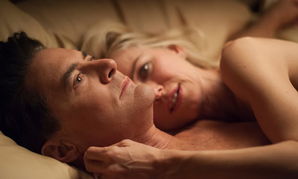

Dougie gets lucky and a minor character gets promoted to a major scary-monster in an emotionally unpredictable episode.

Twin Peaks has given us a new monster to fear, and his name is Richard Horne. He's not a creature from the Black Lodge like Bob or the Woodsmen, at least as far as we know. He's just Ben and Sylvia Horne's piece-of-shit grandson, which would make Audrey Horne – Sherilyn Fenn's girl-next-door femme fatale, still unseen in the show's astonishing third season – his mother. His father? Good question, although given reports of Dale Cooper's Bob-ppelganger skulking around the young woman's hospital bed 25 years ago after the events of the Season Two finale, we may not want to hear the answer.
We know a lot more about this scumbag by the end of this episode, however, than we did before. He assaults women in bars and runs over children in the street. He murders accomplices and witnesses alike, including the friendly schoolteacher who saw him behind the wheel during that awful hit-and-run. He threatens his own grandmother, robbing her and nearly choking her to death while a bizarre toy repeats "Hello, Johnny! How are you today?" As a side note, he gives orders to Chad, the crooked-as-hell deputy in the Sheriff's Department, to help him to cover up the crimes.
The brutality of Richard's attacks is difficult to bear, no matter how director David Lynch chooses to shoot them – whether he leaves the camera outside the schoolteacher's trailer, only entering the scene after the killer exits, or getting us so close to the dirtbag's obscenity-laden assault on his own grandmother that we're all but made complicit. Who will tell Miriam's kindergarten students why she's no longer their teacher? How can Mrs. Horne make her son understand what's happened? And what about the abuse Becky (Amanda Seyfried) suffers at the hands of her abusive husband Steven? It's like Richard writ small, occurring within earshot of poor Carl Rodd (Harry Dean Stanton). "What a fuckin' nightmare," he says. But this nightmare is real.
Yet Lynch and his partner-in-crime Mark Frost also jam the episode full of some of the season's funniest moments, because this is Twin Peaks and the rules of screenwriting can go to hell. So right alongside Richard's rampages, you've got Janey-E Jones (Naomi Watts, clearly having a ball) getting righteously turned on by her ersatz husband's new physique. This leads to a one-sided sex scene in which she screams "Dougie!" loud enough to wake up their son (and probably the whole block), while the amnesiac Cooper re-learns what sex feels like, his arms flapping around like vestigial fins.
Back in Twin Peaks, Dr. Jacoby is at it again, ranting and raving on his livestream about the government and corporations treating us like sheep whose wool they can harvest, leaving us naked and screaming. Watching intently is Nadine Hurley – the proud owner, we now learn, of Run Silent Run Drapes, the cotton-ball-fueled business of her Season One dreams. If you didn't hoot with delight when you saw that, or when sourpuss Albert Rosenfield enjoyed a romantic dinner with local coroner Constance Talbot, you're as out of it as Dougie.
If all this reboot did was alternate ridiculous scenes with horrifying ones, it would still be relatively easy to get a handle on: You'd just hold your breath each time the show cut to a new location until you figured out what you were in for, and that would be that. But this series isn't just a coin that its co-creators repeatedly flip – it's something more multidimensional and a lot messier. Consider the scene in which Rodney Mitchum, the intimidating co-owner of the Silver Mustang Casino, gets accidentally whacked in the forehead with a remote control by his daft showgirl girlfriend Candie, who's so intent on killing a pesky housefly that its human landing site failed to register. The emotional cacophony that follows – Candie screaming and sobbing in horror, Rodney howling in pain, his brother Bradley (Jim Belushi!) rushing in to see what's wrong – makes you laugh. And then you cringe. And then you get genuinely worried for all involved.
This goes double for the trio's subsequent scenes. The brothers watch a news report on Ike the Spike's arrest after his attempted murder of Dougie while poor Candie wonders aloud if her beau can ever love her again. Later, Mr. Jones' sleazy coworker Anthony Sinclair (Tom Sizemore) shows up at the Silver Mustang on the orders of the Mitchums' rival – and the evil Cooper doppelganger's minion – Duncan Todd to pin the blame for a costly insurance loss on Dougie. He hopes that the bros will finish the job the Spike started. But Sinclair is waylaid by the increasingly unhinged-seeming showgirl, who spends an inordinate amount of time explaining the benefits of air conditioning to instead of simply showing him into their office.
Both scenes dance back and forth across the boundaries between funny, creepy and skin-crawlingly uncomfortable – a shuffling boogie not unlike the one our beloved Man from Another Place used to dance across the Red Room. So, for that matter, does the whole damn show. Thanks to canny policework by Albert and Tammy, as well as supernatural interventions by the Log Lady and the spirit of Laura Palmer, lawmen like Gordon Cole and Deputy Hawk are closer than ever to cracking the mystery of Coop's disappearance and duplication. But the creative riddle of Twin Peaks still maddeningly, gloriously unsolvable.